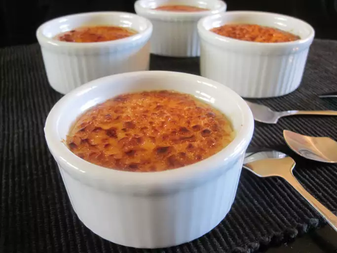

Crème brûlée, a timeless French dessert, is the epitome of elegance and indulgence. This exquisite dish features a luxuriously smooth custard base, crafted from rich cream, fresh vanilla, and egg yolks, offering a delicate balance of sweetness and velvety texture.
The crowning glory of crème brûlée is its signature caramelized sugar crust, achieved by sprinkling a thin layer of sugar over the custard and carefully torching it to create a crisp, golden shell. This contrast between the creamy custard and the brittle, caramelized topping creates a symphony of textures that delights the palate with each spoonful.
Often served in individual ramekins, crème brûlée is a dessert that captivates with its simplicity and sophistication, making it a perfect ending to any fine meal.
Here is the recipe for Creme Brulee!
